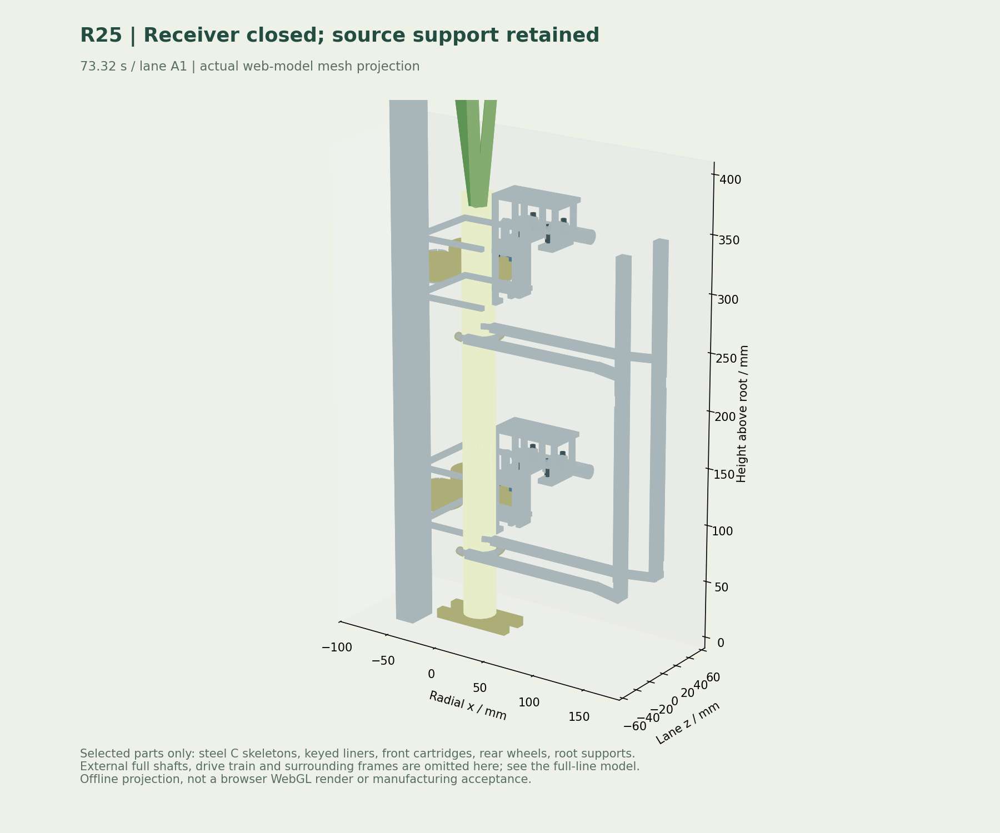
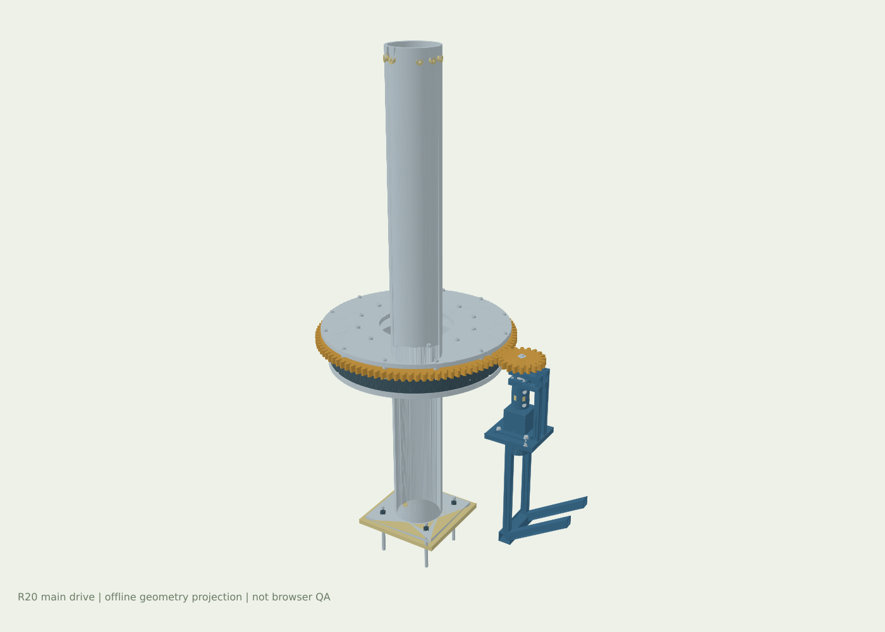

- 承载与固定
- 动力来源
- 传动与保持
R26 / 落带接重已修正 · 变径移载继续复核
先降到实体带面，再打开移载笼。
主流程修正约10mm落带高差：77.30秒先由接料带接重，77.35秒开始松笼；根托随后退出。接料带未到位时，77.25秒提前保持夹具。自动上料、旋转加工、供膜检重和框体输出继续保留。
另细化双导杆防转、独立压簧、衬套、软压块M3固定与可拆后盖的变径候选。候选翻平横向承重和换装接口尚未闭合，未替换主机构；主流程仍只验证Ø28直葱。
打开变径候选实体与载荷复核 ↗ 本轮工程记录 ↗R25 / 双层浮动夹具已接入主机
先接重收笼，再释放。空笼退出转盘包络。
保留旋转主体和四列并行。96套前浮动组件补入导杆、衬套、真实圆线压簧、轴承、挡圈与分体管夹；移载笼改连续钢骨和独立包胶，外移纵杆并开避让槽，开合指令20mm/侧，22mm处有开缝限位环、独立M3螺钉与垫圈。空返外停R1650mm，转盘停稳后才接近；卸料托叉接重和闭合后，源夹具再退让。
本版整线仍只验证Ø28直葱。Ø18–34mm、夹距200mm内弓高≤4mm属于局部夹具候选范围；移载笼口、整线变径/弯曲、实料夹伤/打滑、全机连续干涉与全部紧固件仍待完成。
调节局部夹具 / 查看适配边界 ↗ 下载本轮改动与未完成项 ↗R26 全流程三维 · Ø28直葱名义交接正在构建机构…
正在装配三维机构…
可旋转 · 可缩放 · 点击零件查看支承
实线实体表示机械结构蓝：气路 / 水路 金：封口 / 接管 绿：葱体方案演示 · 尚未通过完整 CAD 干涉及实料验收

R23 / 机械实体、门架与排水
查看实体、剖切与未完成项 ↗沿安装接口细化，悬空件逐项整改。
补折边丝杆的支承、轴向限位、带孔螺母安装板和夹紧联轴器；缩短门架跨度；接水盘改有厚度的斜盘，滤箱补真实开口、滤篮、排污双法兰与紧固。空心型材与开口网格也已分项登记。尚未把所有简化件完成，整机干涉、工程图及实料验收仍未完成。
整线流程 / 自动上料、供膜与成品输出
打开历史单列供膜复核 ↗四列包装已接入主场景，继续按接口逐段验收。
120mm列距不足以容纳膜路与封口机构，本轮增加窄距缓冲、600mm展距包装和成袋并距。主场景展示自动供膜与输出；整机干涉、工程图及实料验收仍未完成。
ROTARY BODY · FOUR AT A TIME
保留旋转主体，
把整线交接接起来。
本轮连接四列展距、平膜自动供给、成形封切、成袋并距与检重出料；补入导轨、同步带轴、实际通孔、键槽、支座和随动电缆链。保留前轮主传动CAD实体与四联旋转加工。以实际检查范围区分运动跑通和工程验收。
4 支一组并行移载
12 工位保留旋转主机
8 s设计分度周期 · 待实测
按四支/8秒换算 1800 支/h；整线实际产能与可靠性待实料验证。
R20 / CAD → MOTION → REVIEW
每一段传矩，都有实体连接。
保留十二工位旋转主机，将主传动从示意形状推进到可导入 CAD 的装配实体。站点网格与 STEP 来自同一套参数。
234零件实例50有效实体几何51新增紧固件组
下载主传动 STEP 压缩包 · 可导入 SW ↗下载同源 GLB · Blender / Unity ↗范围：主传动分总成；采购件采用设计包络，内部滚道与真实螺纹未展开。STEP 不含原生 SW 配合。
正在读取CAD实体、装配及啮合检查…
实体装配 / STEP 回读检查 ↗齿轮啮合与驱动计算假设 ↗51套紧固件和叠厚明细 ↗R22 · ASSEMBLY INTERFACES
不仅有螺栓，还要有对应的孔与承力面。
八个长行程横移轴改用同步带。新增同源CAD轴系：阶梯轴、键槽、轴承座、端盖、隔套、独立紧固件、张紧底座与夹带转接；同时修正入口送料早于小车回位的交接缺口。
单轴161个CAD零件实例
逐件查看实际通孔、独立螺母与垫圈，可隔离和剖切。采购件内部、齿形、预紧及公差尚未冻结，零件数量不代表制造完成度。
打开横移轴装配三维 ↗先回位，再接料，最后展距
入口固定带暂存；小车86.2秒回到窄距后送料，87.85秒全长接入，88秒开始展距。最大横移速度1.125m/s为设计轨迹，仍须以实料与选型校核。
下载整线模型零件目录 ↗查看计算依据与未闭合接口 ↗R21 · INTEGRATED FOUR-LANE PACKAGING
先离开卸料包络，再展距包装。
保留旋转主体与四支/8秒的设计节拍。增加窄距缓冲、展距和并距段，首组流程增加24秒；这增加在制品与占地，不等于降低稳态节拍。理论1800支/小时尚未经过实料验证。
120 → 600 → 120 mm
四条带式小车由双导轨承重、独立同步带轴横移。先定位、再送料；产品尾端离开后空车返回。膜卷、张力辊、成形器和封口梁各有独立机架空间。
停膜退热轮，整袋独立上秤
热轮分体驱动和弹簧复位执行器退离膜边；冷牵引轮保持袋距，上下横封梁对合后切断。成品膜保持固定材料尺寸，输送带承担重量。并距后整袋进入独立秤带，再自动送入可回洗收集框。
当前仍是名义机构方案；孔配合、采购件内部、密封清洗、柔性叶片与实膜张力、热封强度、整机连续扫掠和停电安全尚未完成工程验收。
下载整线逻辑检查 ↗下载本轮改动、尺寸与待验收项 ↗ROTATE · SCAN · RETRACT
让每一面经过气流，也让机构退得出去。
点击查看三维中的自转斜吹和抬框交接。以下是名义机构参数，实际工况需要样机标定。
0 rpm等待跟踪组进入去皮工位
01 / 去皮与表面除水
葱体自转，喷头错向扫描
双后滚轮驱动、前弹性从动轮测转。A/B 去皮各6圈，风刀各4圈；根端托条承担重量。
35° / 45° 轴向±20° 切向入射140 mm 退让
窄带入框，再抬框接重
取消供托料仓和推托。14 mm 窄带及17 mm内部支承穿过22 mm底槽，固定带持续承托；收集框先缓升接重，再上提160 mm，完全离带后才横移。
纸托耗材 0收集框可回洗
角度和转速为初始设计值。几何覆盖计算不等于去皮率；叶片收拢是几何形变表达，湿态打滑、夹伤、气耗及封口强度尚待试验。
SUPPORT BEFORE RELEASE
四个问题，落实到四段机构。
先接稳，再释放。下方描述是设计承重路径，仍需实体接口与实料验证。
上料时，大葱为什么不掉？
四槽输送带底面承重，弹性压辊限位；取料时根端托叉从底部接入，两道分体笼合拢后才翻转。旋转托座接住根底、主笼闭合确认后，送料笼才打开。
膜怎样供给和保持？
四列展至600mm间距后独立包装，成袋再并回120mm检重。采用平膜下走膜、两侧上折、纵向鳍封和双端横封；输送面承担葱的重量。膜靠闭合袋体保持，封缝不作为吊装件。供膜张力与封口强度仍待验证。
看历史单列供膜专项 ↗风干和称重怎么接上？
先沥水，再让葱体在两段向下斜吹的风刀前分别自转4圈，吹除表面自由水，水落入斜盘。包装后整包进入独立秤架，前后带留缝、无固定夹具接触，再进行检重。
成品最后为什么能直立？
四包平放进入收集框后整框翻直；窄带穿框底槽送入，框底缓升接重并上提离带；根端软托座与双层导向框扶正，支脚展开锁定。整个框沿辊道进入缓存，葱体一直留在框内。
MECHANICAL SUPPORT & DRIVE REVIEW
逐件看支承，逐段查动力。
本轮新增包装与展距接口；保留主传动同源CAD实体；保留前轮分体管夹、电机法兰穿栓、空心型材及滑台、支架、仪表和夹爪细节。选择机构查看承重路径；点击三维零件可查看对应记录。下表是方案归属，不能代替接触、公差、强度和实料验收。
正在载入机构…
- 支承路径
- 动力来源
- 传动路径
对应模型零件：
R19 / FASTENERS & SECTION GEOMETRY
螺栓穿到哪里，孔就开在哪里。
- 支承 / 固定
- 动力来源
- 传动连接
正在读取通孔与装配叠厚检查…
下载接头尺寸与几何检查 ↗下载40套穿栓明细 ↗下载空心型材壁厚假设 ↗Bossard · 螺母外形尺寸参考 ↗逐项登记，继续关闭剩余紧固点。
以下230处仍是遗留简化螺杆，尚未完成配孔、叠厚、工具空间和防松选型。型号、扭矩和载荷未定案；本页不将外观细化计为整机装配验收。
点击条目定位原模型中的简化紧固点。
下载完整剩余紧固点清单 ↗地脚调平螺杆与联轴器另行登记，可在下方零件检索中输入 foot_screw 或 coupling 定位。
下载调平螺杆与联轴器待定接口 ↗R18 / MOUNTING DETAILS
13组安装细节，沿传力路径检查。
点击定位新补的实体。连接记录按动作姿态核对名义接邻；接邻并不证明真实承载接触或孔配合。
- 支承 / 固定
- 动力来源
- 传动连接
正在读取安装细节检查…
下载安装细节与接邻检查 ↗下载逐项连接表 ↗THK · 丝杠与支承单元安装参考 ↗正在读取机械复核记录…
下载R20历史机构支承与动力记录 ↗下载R20历史机械零件归属表 ↗下载本轮局部实体接口筛查 ↗包装四列集成、完整紧固/配合、载荷与疲劳、停电保持及卫生结构仍需继续验证。源代码中的父子归属不等于承载连接已经验收。
结果显示前30项；也可直接点击三维实体。
TRANSMISSION & SUPPORT
把传动、管路和支承画出来。
本版表达主要构件的拓扑与运动。紧固、公差、密封、润滑和卫生结构仍需后续工程图。
旋转主机
固定服务环
固定服务环
加工头和供气、供水保持固定。旋转部只携带机械托座，工位驱动头在停位接合，分度前退出。
减少旋转软管
让运动和介质路径分开
让运动和介质路径分开
| 模块 | 动力 / 传递 | 支承与退让 |
|---|---|---|
| 旋转分度 | 伺服减速机 → 小齿轮 → 环齿轮 | 回转轴承＋环形轨道＋径向支撑轮 |
| 四联移载 | 径向丝杠＋升降丝杠＋侧置翻转驱动 | 双径向导轨、双立柱；先径移再翻转 |
| 托座自转 | 固定摩擦驱动头 → 横轴 → 蜗轮 / 同步带 | 轴承、独立根底托条；驱动头先退让再分度 |
| 去皮扫描 | 每支双喷头＋轴向扫描＋径向退让 | A/B 轴向35°/45°，方位±35°；两级恒长拖链 |
| 除水与排污 | 过滤鼓风机 → 固定风管 → 两段斜吹风刀 | 独立立柱管卡；斜盘 → 滤篮 → 排污接口 |
| 包装 / 检重 | 四列展距 → 独立平膜包装 → 成袋并距 → 独立检重 | 双导轨与同步带轴支承横移；停膜时热轮退让，冷轮保持；实膜验收待完成 |
| 直立收集 | 抬框离带 → A/B 横移 → 整框翻转 → 支脚锁定 → 辊道 | 双层导向框、根端实托；侧仓自动补框 |
REVIEW RECORD · NOT PRODUCTION RELEASE
把已检查和待验证说清楚。
R21 整线交接与局部接口检查
检查范围随记录列明；不代表四列包装对接或整机制造验收。
下载 R16 供膜几何与时序检查 ↗正在读取本版检查记录…
下载本轮位姿与交接检查 ↗下载斜吹与覆盖假设 ↗下载本轮局部接口筛查 ↗正在读取几何接口筛查…
下载 R16 包装复核与剩余工作 ↗下载 R20 历史机械改动与验证边界 ↗历史修订12的网格 / CAD 结果不作为本版验收证据。本版提供主传动中性 STEP，尚非整机 SW 装配体。